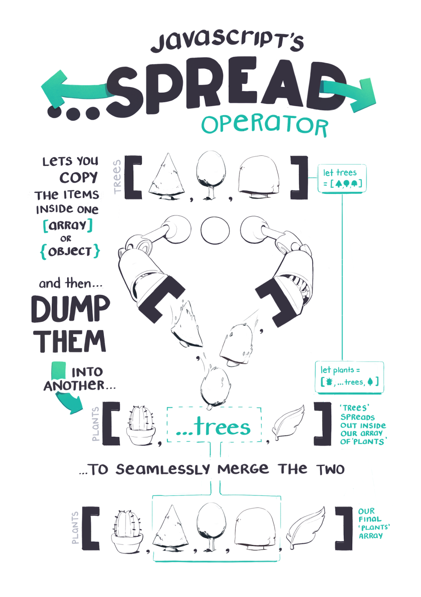
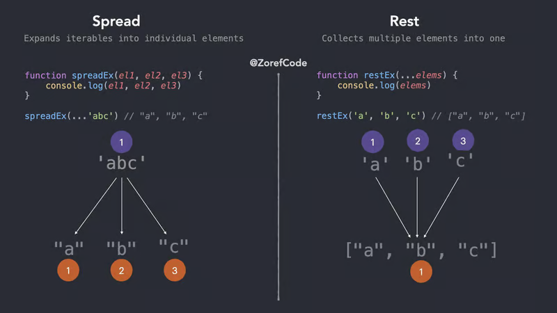

Preguntas Teoricas
El operador spread te permite propagar los elementos de un iterable (como arrays, cadenas u objetos), en otro iterable o llamada a función.
Se denota con tres puntos «...» seguidos de una expresión o un iterable. El operador spread es una potente herramienta que proporciona una forma concisa y flexible de trabajar con datos en JavaScript.
Puede utilizarse para concatenar arrays, crear copias superficiales de arrays, convertir cadenas en arrays de caracteres, fusionar o clonar objetos y pasar dinámicamente valores a funciones o constructores, entre otros casos de uso.
El operador spread simplifica las operaciones complejas y permite un código más expresivo y eficiente. Esto lo convierte en una función muy popular
Veamos algunos ejemplos de uso del operador spread con arrays, cadenas y objetos para ilustrar su sintaxis y uso.
Puedes utilizar el operador spread para distribuir los elementos de un array en otro array. Esto es especialmente útil para concatenar arrays o crear una copia superficial de una array.
const arr1 = [1, 2, 3];
const arr2 = [4, 5, 6];
// Concatenate arrays using spread operator
const concatenatedArr = [...arr1, ...arr2];
console.log(concatenatedArr); // Output: [1, 2, 3, 4, 5, 6]Puedes utilizar el operador spread para desglosar los caracteres de una cadena en un array. Esto es útil para convertir una cadena en un array de caracteres, que puede manipularse o combinarse con otros arrays utilizando métodos de array.
const str = "Hello";
// Spread characters of a string into an array
const charArray = [...str];
console.log(charArray); // Output: ['H', 'e', 'l', 'l', 'o']Puedes utilizar el operador spread para propagar las propiedades de un objeto en otro objeto. Esto es útil para fusionar o clonar objetos, crear un nuevo objeto con algunas propiedades anuladas o extraer propiedades específicas de un objeto.
const obj1 = { a: 1, b: 2 };
const obj2 = { b: 3, c: 4 };
// Merge objects using spread operator
const mergedObj = { ...obj1, ...obj2 };
console.log(mergedObj); // Output: { a: 1, b: 3, c: 4 }
// Clone an object using spread operator
const clonedObj = { ...obj1 };
console.log(clonedObj); // Output: { a: 1, b: 2 }El operador spread también puede ser usado en otros contextos, como los argumentos de una función, para pasar valores de manera dinámica a una función o constructor.
// Pass array elements as arguments to a function using the spread operator
const numbers = [1, 2, 3];
const sum = (a, b, c) => a + b + c;
console.log(sum(...numbers)); // Output: 6El operador spread puede utilizarse junto con otras funciones modernas de JavaScript, como la desestructuración de arrays y objetos, para habilitar potentes técnicas de programación funcional. Te permite extraer y manipular elementos de arrays o propiedades de objetos con una sintaxis concisa y expresiva.
const numbers = [1, 2, 3, 4, 5];
const [first, second, ...rest] = numbers;
console.log(first); // Output: 1
console.log(second); // Output: 2
console.log(rest); // Output: [3, 4, 5]Los ejemplos anteriores muestran la versatilidad y flexibilidad del operador spread en JavaScript, convirtiéndolo en una herramienta poderosa para manipular y combinar datos de manera concisa y eficiente.
Es importante tener en cuenta que el operador spread crea copias superficiales de matrices y objetos, y puede tener implicaciones de rendimiento cuando se utiliza con arrays u objetos grandes.
const originalArray = [[1, 2, 3, 4], 12];
const copiedArray = [...originalArray];
copiedArray[0].push(99);
console.log(originalArray); // Output: [[1, 2, 3, 4, 99], 12]
console.log(copiedArray); // Output: [[1, 2, 3, 4, 99], 12]En este código, originalArray es una array con cuatro elementos. Utilizando el operador spread, creamos un nuevo array copiedArray y propagamos en él los elementos de originalArray. A continuación, modificamos el primer elemento de copiedArray añadiendo 99 con el método push.
Cuando obtengas la salida de copiedArray, la salida mostrará que se ha añadido 99 al array del primer elemento, pero hay un problema con la copia superficial que hace el operador spread. El cambio en copiedArray afecta a originalArray.
Esto se debe a que el operador spread no crea copias completamente nuevas de los elementos o propiedades, sino que comparte referencias a los elementos o propiedades originales. Esto puede tener implicaciones de rendimiento cuando se trabaja con arrays u objetos grandes.
Por lo tanto, si trabajas con arrays u objetos grandes, o si necesitas hacer modificaciones profundas en el array u objeto copiado sin afectar al original, quizá debas considerar otros enfoques, como la copia profunda o el uso de bibliotecas diseñadas específicamente para manejar estructuras de datos complejas.
Es esencial utilizar el operador spread con criterio y tener en cuenta las mejores prácticas para un rendimiento y una capacidad de mantenimiento óptimos.

Es inverso al operador de dispersión. mientras que el operador de extensión expande elementos de un iterable, el operador de resto los comprime. Recoge varios elementos. En funciones en las que necesitamos pasar argumentos pero no estamos seguros de cuántos tenemos que pasar, el parámetro rest lo hace más fácil.
La principal diferencia entre los dos operadores radica en sus nombres. El operador de extensión en JavaScript expande los valores de matrices y cadenas en elementos individuales , mientras que el operador de resto coloca los valores de los datos especificados por el usuario en una matriz de JavaScript. Echemos un vistazo al siguiente ejemplo para comprender esta diferencia:
function spreadAndRest (firstArg, secondArg, ...otherArgs) {
console.log(firstArg, secondArg);
console.log(otherArgs);
}
// 1 2
// [3,4,5,6]
spreadAndRest(...[1,2,3,4,5,6]); En el ejemplo anterior, estamos usando el operador rest …otherArgs en el parámetro de función para colocar los valores pasados en la llamada a la función (3, 4, 5, 6) en una matriz. De manera similar, usar el operador de extensión durante la llamada a la función ayuda a distribuir los elementos de una matriz en elementos individuales para la función spreadAndRest .
EJERCICIOSEjercicio 1:
Combina dos arrays [1, 2, 3] y [4, 5, 6] en un solo
array.
Ejercicio 2:
Crea una copia del array [1, 2, 3]. Añade un nuevo elemento al
inicio del array
Ejercicio 3:
Combina dos objetos {nombre: "Beatriz", edad: 47} y {puesto:
"Director", antigüedad: 4} en un solo objeto y crea una
copia
Ejercicio 4:
Utiliza el operador de propagación para sumar todos los
elementos de un array.
Ejercio 5:
Crea una función que acepte múltiples argumentos y los imprima.
Como ejemplo de uso imprime "Hola", "Mundo",
"JavaScript"